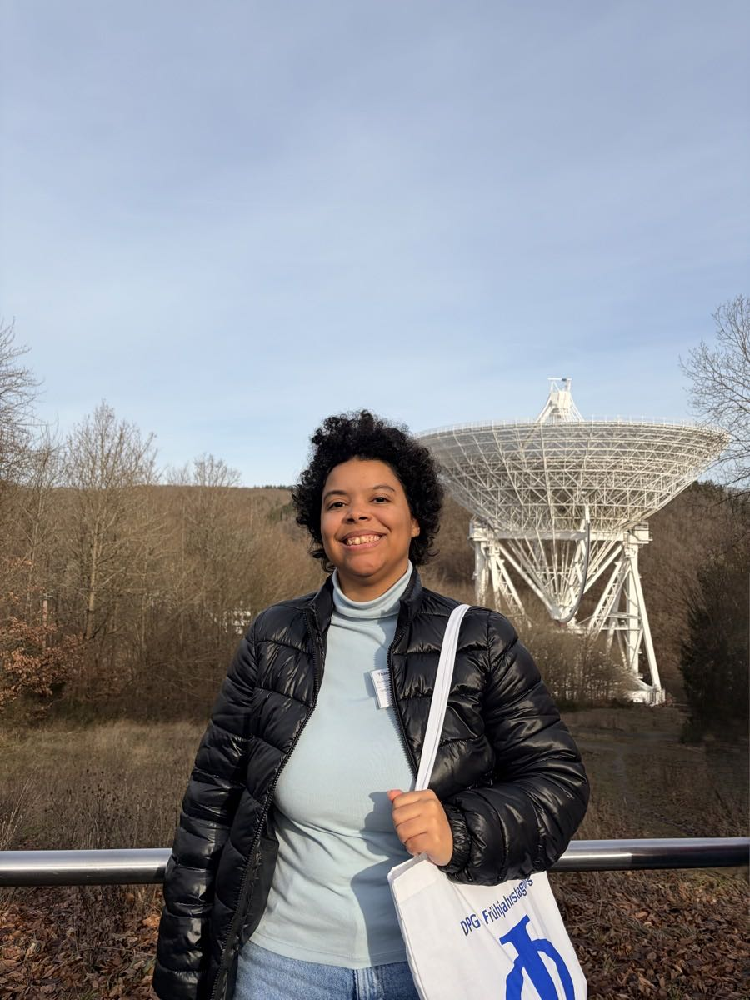

About me

I am a doctoral researcher working with the Pierre Auger Cosmic Ray Observatory at the Karlsruhe Institute of Technology. I recently finished a master's degree in Astrophysics and Space Science (MASS) funded by an Erasmus Mundus Joint Master scholarship. This program is delivered by a consortium of four universities. I attended the University of Rome "Tor Vergata" and the University of Belgrade as part of my studies. Originally from the Dominican Republic, I obtained my bachelor's degree in Physics from the Autonomous University of Santo Domingo. I am interested in multi-messenger astrophysics, statistics and coding. You can find more about me in my CV.